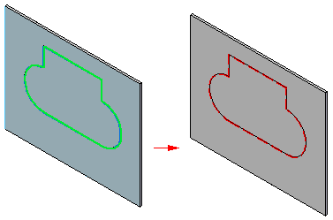
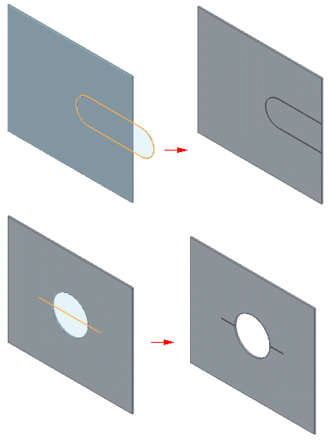
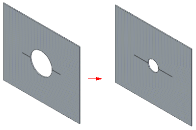
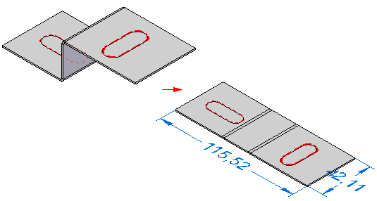

Etch command
Etch command
Constructs an etched feature from a sketch element or text profile. Etch features are considered finishing features and should always be added near the end of the model feature tree.

If you select an object that intersects the tab boundary the etching extends only to the boundary of the tab.

If you edit the boundary, the etching automatically adjusts to the change.

Etchings in flat patterns
Like other sheet metal features, etched features can transform from the molded model state to the flat pattern.

Changes made to the sketch or text profile are reflected in both the folded and flattened model state.
When you use the Save as Flat command to save the sheet metal in a flatten state, the etch elements that represent the scribe lines for engraving are exported.
Etch text
When using a Solid Edge Stick font, check the "Export Etch text as geometry" option on the Save AS Flat DXF Options dialog.
When using a Solid Edge True font, check the "Export Etch text as as a text box" option on the Save AS Flat DXF Options dialog. The font is mapped to an AutoCAD shape font (.shx).
How do I
Construct an etchMove or edit an etch
Look up more details
Etch command barEtch Options dialog box
Related Topics
Editing etchingsEtching fonts, colors, and line styles